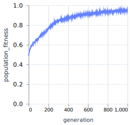
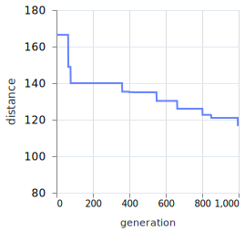
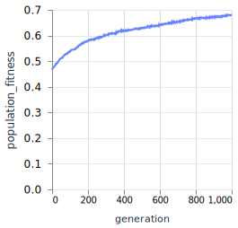
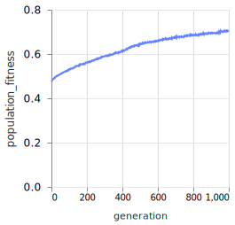

I was looking out my window and saw a delivery truck passing by on the street the other day. This got me thinking about a classic algorithm challenge: The Traveler Salesman Problem (TSP for short).
The challenge goes like this: A salesman has a list of cities they need to visit. They must visit each of them and return to their starting position. What is the shortest route they can take?
This is of course a problem that has been solved in multiple ways, thousands upon thousands of times over. The delivery driver has a route already preprogrammed - they don't need my help mulling it over. So why am I thinking about it?
One could say such everyday problems are more fun when applying algorithms to solve them, and I am looking for a reason to pull out my algorithmic toolbox. It's a fair statement! I recently put a new tool in that toolbox and I've been on the lookout for a reason to go nuts with it.
There are some interesting tools I can use, but there is a specific one I'm on the lookout for. So let me just quickly rifle through it:
-
Brute force: The hammer of all hammers, brute forcing is not elegant but it gets the job done... eventually. If we were to use brute force to solve TSP we would be calculating each possible solution and then select the best one. The number of possible solutions to TSP is given by the formula
(n-1)!/2. It's a factorial representing each possible combination of visits to the cities, and as it loops back to the beginning, the direction of the loop does not matter. So if the salesman had to visit18cities, this would be(18-1)!/2)which comes out to1.8 × 1014possible solutions. It's entirely possible, but I rifle on. -
Nearest neighbor: A screwdriver in comparison, this algorithm is focused on the here-and-now with disregard for the larger picture. With a nearest neighbor the salesman would always travel to whichever city is closest to the city they are currently in. While this might see them cover a larger distance than brute forcing, it is much faster and can be good enough. But if you've read my previous article, you might suspect that I'm on the lookout for another tool.
-
Genetic Algorithm: Now this is what I'm talking about! Genetic Algorithms (GA) might find the best possible route, but they might also find a solution that is just good enough. This is my hammer, saw, and ruler - all combined. It might look a bit freakish, but it's so versatile and fun to use! GA is inspired by evolutionary processes. Survival of the fittest and mutations will play a role in it finding a good enough solution. As long as we can define the solution as a "chromosome" and a way to measure the "fitness", GA will be possible to use.

So how would I use a Genetic Algorithm (GA) to find a short enough route for the salesman? Let's consider this; is it possible to describe a possible solution as a "chromosome"? I will say an emphatic yes! A route can be described as a series of cities in the order they will be visited. If we have the 3 cities 1, 2, and 3, then a chromosome could be a list: [1, 2, 3] or [2, 1, 3], and so on. As long as there are coordinates for each city it will be possible to calculate the distance between them, a.k.a: their "fitness" (where shorter is better).
Knowing that I have a reasonable enough representation of a possible solution and a way to measure its fitness, let me share with you the plan!
The Plan
There is a classic movie series here in Sweden called "The Jönsson Gang". It's about a gang of mainly 3 thieves aiming for heists beyond their competence. Their leader, Charles Ingvar Jönsson, had an iconic line: "I have a plan!" His plans were very detailed, and would probably work most of the time. That is, if he and his gang weren't distracted by anything from a hotdog to a beer. Well, let me tell you: I have a plan and I'm all out of sausages!
Less on the nose than "The Purge", and I can’t ask for more than that.
We are going to need:
-
Chromosomes and a way to generate them for the initial population.
-
Fitness function that will be able to give a measure to the chromosomes' "fitness". Which means we need a function to measure the distance between each city in the chromosome, and not forget to measure the distance between the last city in the chromosome with the first.
-
Parents and how we select them. OK, that sounds weird, but if we are going to have a new generation of chromosomes we need something to base them off of. And we are not going to select them completely at random. This is not a singles' cruise!
-
Crossover (and I'm so glad that this is the term chosen) between pairs of parents' chromosomes. Each pair of parents will produce 2 offsprings, where first offspring will select from parent a first, and second offspring will select from parent b first.
-
Mutation of chromosomes. This is a natural part of the parents producing offspring. This will introduce a unique trait to an offspring that is not necessarily found in the parent. If we are lucky we might see some Super Mutants!
-
Pruning of the population. The least fit chromosomes will leave place to the next generation. This dispassionately called process is less on the nose than "The Purge", and I can't ask for more than that.
-
The Evolutionary Loop! Each part that I've described is part of evolution. All that is left is passing on the new generation to the next and let nature have its fun. Since I'm not as elegant as dear Charles Ingvar Jönsson I will set a generational limit instead of a goal-oriented threshold for the loop.
Chromosomes are potential solutions
With the Travelling Salesman Problem the solution is a route, and a route is nothing but a series of places to visit. And by randomly selecting cities to visit, there is a potential that these routes collectively hold the key to the shortest route. And eventually, through evolution, the collection of randomly generated routes, survival of the fittest, and mutation, a generation will produce a good enough route.
I think I've teased you enough. It's time to bring in the code (using Elixir)! I will represent the cities as a list of coordinates, and the chromosomes shall be the indices for each city.
@cities [
%{x: 10, y: 20}, %{x: 5, y: 15}, %{x: 12, y: 1},
%{x: 20, y: 10}, %{x: 7, y: 14}, %{x: 15, y: 3},
%{x: 15, y: 12}, %{x: 15, y: 10}, %{x: 20, y: 8},
%{x: 2, y: 14}, %{x: 3, y: 11}, %{x: 14, y: 7},
%{x: 5, y: 11}, %{x: 5, y: 23}, %{x: 20, y: 23},
%{x: 7, y: 23}, %{x: 16, y: 12}, %{x: 25, y: 12}
]
A chromosome is the length of the list, with each gene representing the index to one of the cities. The foundation is laid when I initialize the population. Let me show you:
def initialize_population(population_size) do
chromosome_template = Enum.to_list(0..(Enum.count(@cities) - 1))
Enum.map(1..population_size, fn _ -> Enum.shuffle(chromosome_template) end)
end
Not to toot my own horn here, but doesn’t that look very simple? I introduce the chromosome_template that contains all the indices and shuffle it until I have created enough chromosomes.
While we are talking about population and chromosomes, let me just warn you that we will see an addition on top of this. I will store a chromosome along with its distance (introduced just below this paragraph) in a map so we get a
chromosome_datavariable with a value like%{chromosome: [0,1,2], distance: 4.321}.
The shorter the better - the fitness function edition
Just like Bilbo, it's not enough to go "there" - you need to have "and back again" too! The traveling salesman will be visiting each city and then return to their starting city, making a complete loop. The fitness function will sum up all the distances between each city and return that.
A city's coordinate is represented by a map: %{x: 10, y: 20}. When we have two cities they can be: %{x: 10, y: 20} and %{x: 5, y: 15}. The distance between the cities requires a touch of math (or magic if you just want to skim this). The distance between two coordinated in a 2D field can be calculated with the help of Pythagoras: a^2^ + b^2^ = c^2^ (or 2D Euclidean). And reframed for the two cities it would be the same as (x1 - x2)2 + (y1 - y2)2 = c2. Then the distance is d=√(c2). And when we insert the values: d=√((10-5)2 + (20-15)2)≈7.
Representing this calculation in code:
# Calculate the distance between two cities
def distance(%{x: x1, y: y1}, %{x: x2, y: y2}) do
# Using 2D Euclidean distance
dx = abs(x1 - x2)
dy = abs(y1 - y2)
(dx ** 2) + (dy ** 2)
|> :math.sqrt()
end
Oh, the pattern matching - unpacking values to variables right there in the function definitions!
This calculation should be done between each city in a chromosome. If you like some recursion and pattern matching, you will like this bit:
def distances([first, second]) do
city1 = Enum.at(@cities, first)
city2 = Enum.at(@cities, second)
distance(city1, city2)
end
def distances([first, second | tail]) do
city1 = Enum.at(@cities, first)
city2 = Enum.at(@cities, second)
distance(city1, city2) + distances([second | tail])
end
Oh, the pattern matching - unpacking values to variables right there in the function definitions! The first distances function will catch when a list is passed to it that contains only two elements, so it will return only the distance between the two cities in the list. But the second function will continue calling itself as long as there are more elements in the list.
And if you are thinking that this does not measure the loop-back distance, you are correct! I saved that fun tidbit for the fitness_function:
def fitness_function(chromosome) do
last_to_first_elements = Enum.take(chromosome, 1) ++ Enum.take(chromosome, -1)
there = distances(chromosome)
and_back = distances(last_to_first_elements)
there + and_back
end
On top of taking the distance between the cities in a chromosome, the fitness_function will also take the last and first element and get its distance. Finally it will add up the distance there and back again and return the sum on a silver platter.
With this tidbit, each chromosome can be neatly packaged together with its distance in a data-package. A bit like this:
population = initialize_population(population_size)
chromosome_datas =
population
|> Enum.map(
fn chromosome -> %{chromosome: chromosome, distance: fitness_function(chromosome)} end
)
As
initialize_populationreturns a list of chromosomes, it can be enumerated on and return new elements that package the chromosome with the distance returned from thefitness_function. Doing it this way means we will have the chromosome's fitness readily at hand. I do not consider distance or fitness a part of the chromosome, but rather additional data about the chromosome.
The not-a-singles-cruise way of selecting parents
"So you want offspring but want someone to do it for you?" Good news, I’ve got the recipe for you! Given that there is a population of random chromosomes, it would be neat if the next generation were a bit better than the one previous. While I personally would like to say that millennials have it all figured out, we can still improve upon this generation. But for this to work we want to give a higher chance to chromosomes with shorter routes to produce offspring. This will mean that the offspring inherits the parents' good qualities (or bad, but that's why we want to prefer the parents with shorter routes).
Selecting parents is not as much a cruise fare as it is a casino.
There is this thing called roulette wheel selection. To give a higher chance for the chromosomes with shorter distances to be selected I will just give them a larger pie of the wheel than the chromosome with longer distances. When I spin the wheel, every chromosome has the chance of being the winner but the likelihood that it falls on a chromosome with a longer route is smaller.
My foolproof plan for this is to summarize every route's distance and make an inverse ratio for them. On each spin of the wheel, there is a chance that a chromosome will be selected. The higher the inverse ratio is, the higher the chance that the wheel will stop at the chromosome.
In Elixir, I would do it like this:
def general_inverse_fitness(population_data) do
Enum.reduce(population_data, 0, fn data, acc -> acc + 1 / data.distance end)
end
def select_parents(population_data, num_parents \\ 2) do
general_inverse_fitness = general_inverse_fitness(population_data)
Enum.map(1..num_parents, fn _ -> # Select n parents
random_value = :rand.uniform() * general_inverse_fitness
select_chromosome(population_data, random_value, 0)
end)
end
defp select_chromosome(population_data, target_fitness, acc_fitness) do
[chromosome_data | tail] = population_data
# The greater value from the distance function the less the new distance will be,
# so we promote the shorter routes before the longer routes
new_fitness = acc_fitness + 1 / chromosome_data.distance
if new_fitness >= target_fitness do
chromosome_data
else
select_chromosome(tail, target_fitness, new_fitness)
end
end
The select_parents function is the entry-point. It will first summarize the inverse distances. In general the sum will become larger the shorter the distances are but it will depend on population size (meaning as a standalone metric it is not useful for comparing between different population sizes, but is meaningful within the population that it is used).
With the general_inverse_fitness, the function can continue with selecting parents. Whenever a new parent is selected, a new random value will be the target that a chromosome should achieve. If a chromosome does not achieve the target it will add to an accumulator that is added to the next chromosome's calculation. This is like the slowing of the roulette wheel. So selecting parents is not as much a cruise fare as it is a casino!
Crossover and mutation: The Offsprings
Before we let the parents do what defines them in the evolutionary process, let's consider who should be pairing up with who? In the previous step I let the roulette wheel select parents. I will let the order in which they were selected define the pair of parents. Though it could be any kind of parental constellation - we are not limited to two parents, really - I feel like I want to keep it simple.
Each pair of two parents will combine their chromosomes with each other in a crossover process. This part is important! So if you've skimmed this far, focus-up!
In a crossover I will take a random length of genes from one parent starting from a random position. The genes will be a subarray of cities, preserving the order from the parent chromosome. Then I will assemble a new chromosome and fill in the blanks for each element that is missing from the first subarray.
Example A chromosome has length 6, the crossover will have a starting index of 2, and subarray length of 3.
Parent Chromosome A: [2, 0, 1, 3, 4, 5]
Parent Chromosome B: [1, 2, 3, 5, 4, 0]Subarray 1: [_, _, 1, 3, 4, _]
Available genes from Chromosome B: [2, 5, 0]
Fill in blanks with available genes: [2, 5, 1, 3, 4, 0]
A beautiful snowflake, if you may. Or a Super Mutant!
By combining the chromosomes this way I can preserve some of the route information and find new ones. But whichever parent's chromosome is selected first will have a higher impact for the new chromosome. For this reason I will crossover each pair of parents twice. Both parents' chromosomes will get to go first. It will be less fuss that way!
But an offspring is not only the combination of parents' chromosomes. Each offspring has the potential of being unique: a beautiful snowflake, if you may. Or a Super Mutant!
This is the role of mutation. To randomly introduce new characteristics to a chromosome. What my mutation function will do is to select at least one gene from the crossover chromosome and insert it at a random position.
def crossover(chromosome_1, chromosome_2) do
# 1. We select the parts of chromosome_1 randomly (the order is important)
# It can be [_, _, B, C, A, _]
# which means first selection will be [B, C, A], leaving D, E, F
cut_point_1 = :rand.uniform(Enum.count(chromosome_1) - 1)
cut_point_2 = :rand.uniform(Enum.count(chromosome_1) - 1)
[start_point, end_point] = [cut_point_1, cut_point_2] |> Enum.sort()
selection = Enum.slice(chromosome_1, start_point..end_point)
# 2. We want to get the relationships that is present in chromosome_2
# It can be [B, C, D, F, E, A]
# Be mindful that we do not want to select either A, B, or C again.
# This means that we should filter out every used gene: [D, F, E]
# and start filling the missing pieces with the genes that are left.
available_genes = Enum.filter(chromosome_2, fn gene -> !Enum.member?(selection, gene) end)
{prefix, suffix} = Enum.split(available_genes, start_point)
# 3. And then we assemble the chromosome from the different parts,
# combining chromosome_1 and chromosome_2 genes
prefix ++ selection ++ suffix
end
def mutation(chromosome) do
chromosome_length = Enum.count(chromosome)
portion_of_mutation = 0.1
least_num_of_mutations = 1
num_of_mutations =
round(chromosome_length * portion_of_mutation)
|> max(least_num_of_mutations)
# For each number of mutations
# - Take random element
# - Insert at random position
mutating_genes = Enum.take_random(chromosome, num_of_mutations)
template = Enum.filter(chromosome, fn gene -> !Enum.member?(mutating_genes, gene) end)
Enum.reduce(mutating_genes, template, fn mutating_gene, acc ->
random_pos = Enum.count(acc) - 1 |> :rand.uniform()
List.insert_at(acc, random_pos, mutating_gene)
end)
I would be amiss if I didn't point out that changing the position of just one element in the chromosome will have a huge impact on the overall chromosome information. One element contains not only the order a city is being visited, but it's also information about a connection from one city via the element to the next city. So keeping the mutation to minimal changes is good, as it otherwise would be resulting in a chromosome that is far different from either parent.
Making space for the new generation
Dear Charles would be pretty terrified if he knew what I am about to do.
Charles Ingvar Jönsson would probably know about the Swedish proverb: "Finns det hjärterum så finns det stjärterum". It means that one can always make space for anyone that wants to join, even if it is crowded: the crowd just needs to squeeze together more. So dear Charles would be pretty terrified if he knew what I am about to do.
In nature the population size would continuously fluctuate. But in my synthetically created world the size will be constant. That means: for any number of new offsprings, as many of the old population need to scoot over, and out!
There are many ways this can be done. Some are more imaginative than others. The Purge might have an idea on how this should be done. But I will just sort the old population by their fitness and keep just so many as are needed to keep a constant population size when the new generation is added.
def prune(sorted_population_data, prune_count) do
preserve_count = Enum.count(sorted_population_data) - prune_count
Enum.take(sorted_population_data, preserve_count)
end
Prune. That sounds pretty cold. But that's the process where I simply "cut off" some branches that, in this case, are too long. This allows our population to become ever more fit for its task.
The snapshot of the process: prune(sorted_population_data, num_parents) ++ offsprings
Evolving a better fit
The goal is to find a good-enough chromosome, or route, for our salesman. Each component plays a crucial part to get to that goal. But it's a process that requires many trial and errors. That's why there is randomness and pruning involved. The randomness allows the algorithm to try new and innovative routes never before considered. And while many of them are utterly poor, somewhere a nugget of gold is found.
The evolutionary loop will take in a population of chromosomes, select a cadre of parents and let them reproduce, followed by pruning the population to make space for the next generation. This new population will be passed on to another go at evolution. I reason that it is possible to have this loop continue until a good enough fit has been reached (such as when improvements from one generation to the next are stagnating). However, I've decided to use a hard generational limit instead because I'm feeling lazy.
Once the generational limit is reached, the chromosome with the shortest route in the current population will be returned.
def evolve(
sorted_population_data,
generation_n,
%{generation_limit: generation_limit}
) when generation_n == generation_limit do
[chromosome_data] = Enum.take(sorted_population_data, 1)
total_fitness = general_inverse_fitness(sorted_population_data)
%{
distance: chromosome_data.distance,
chromosome: chromosome_data.chromosome,
generation: generation_n,
population_fitness: total_fitness
}
end
def evolve(sorted_population_data, generation_n, memo) do
%{num_parents: num_parents} = memo
parents = select_parents(sorted_population_data, num_parents)
offsprings =
parents
|> Enum.chunk_every(2)
|> Enum.flat_map(fn [parent_1, parent_2] ->
[
TSP.crossover(parent_1.chromosome, parent_2.chromosome) |> TSP.mutation(),
TSP.crossover(parent_2.chromosome, parent_1.chromosome) |> TSP.mutation()
]
end)
|> Enum.map(fn chromosome ->
%{chromosome: chromosome, distance: fitness_function(chromosome)}
end)
new_population_data =
prune(sorted_population_data, num_parents) ++ offsprings
|> Enum.sort_by(
fn chromosome_data -> chromosome_data.distance end,
:asc
)
evolve(new_population_data, generation_n + 1, memo)
end
def run(population_size \\ 100, generation_limit \\ 250, reproduction_rate \\ 0.3) do
population = initialize_population(population_size)
population_data =
population
|> Enum.map(
fn chromosome -> %{chromosome: chromosome, distance: fitness_function(chromosome)} end
)
sorted_population = Enum.sort_by(
population_data,
fn %{distance: distance} -> distance end,
:asc
)
num_parents = num_parents(population_size, reproduction_rate)
evolve(
sorted_population,
0,
%{
num_parents: num_parents,
generation_limit: generation_limit
}
)
end
Let's say that someone like me created all these components and put them in a module called TSP (Traveling Salesman Problem in short). The way I would initiate the evolution would be to call the run function like this:
TSP.run(aggregator_pid, 100, 1000, 0.3)
The response would be:
%{
distance: 87.68567015836446,
chromosome: [10, 9, 1, 4, 13, 15, 0, 14, 17, 3, 8, 16, 6, 7, 11, 5, 2, 12],
generation: 1000,
population_fitness: 0.946812150303661
}
To me, this looks like a functional algorithm. But don't take my word for it. Take these graphs instead:

In general, a population's (inverse) fitness will increase over time, but it will fluctuate as new and untested offsprings are introduced to the mix. A shortest distance may remain the current best alternative for generations upon generations, until the seeming equalibirum is punctuated by a burst of improvement. By combining these views, we can see that the population is ever improving - even if we can't detect it right away by the currently shortest route.
Here's a peak at the routes (and at which generation) the algorithm discovered them during one run of the code:
population_size=100, generation_limit=1000, reproduction_rate=0.3
Testing different scenarios
The complete code and livebook document can be found as a Github Gist. You are free to copy it and experiment with it as you see fit. I've certainly experimented with it, so let me share a few scenarios with you!
Each scenario has either population changed, or parent ratio. Each scenario is showing two charts. The first chart shows how the sum of a population's general (inverse) fitness increases over the generations. The second chart shows the distance of each generation's shortest route.
Some patterns can be seen for these scenarios. They all follow a taper-off curve, almost a logarithmic curve, for the population fitness; meaning the population see some major improvements through the initial generations and then the improvements are much smaller between generations later on. Another seeming pattern is the impact that a population size have. Small populations might struggle to find routes shorter than 100 before hitting the 1000:th generation. A similar is observed with a small parent ratio.
When population is small (
population=50, parent_ratio=0.3)

When population is large (
population=300, parent_ratio=0.3)When parent ratio is small (
population=100, parent_ratio=0.1)


When parent ratio is large (
population=100, parent_ratio=0.75)


Reflecting on the generations past
Genetic Algorithms are useful when we might want a solution that is "good enough", or if we don't know what a good solution might even look like. I was lucky today that I withstood the temptation of chasing a hotdog and managed to arrive at a solution (Charles Ingvar Jönsson would be proud, as well as the traveling salesman). I can't say if you managed to withstand it, but I'm happy that you allowed me to draw a route for you.
I find Genetic Algorithms incredibly fun to work with. This has been the second time that I'm exploring the subject and I would like to do it again. Besides finding solutions to interesting problems I also find these additional benefits:
- Trying different data representations and structures can unlock huge perfomance improvements - which is fun!
- Recursion, pattern matching, and (if you check out the Livebook document) concurrency! Working with Genetic Algorithms is a good exercise to deepen Elixir skills.
- Fitting each different component together in a recursive loop that makes sense is very satisfying!
I hope you had a good time reading this, and hopefully learned something new. I sure did!